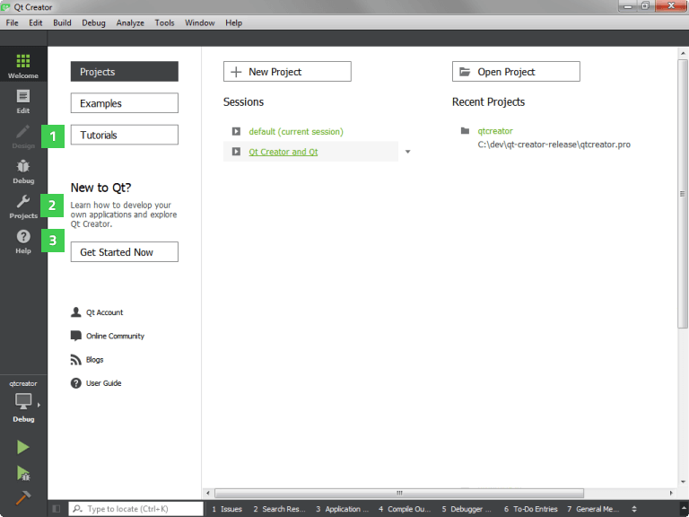

Development Tools
Qt is designed for developing applications and user interfaces once and deploying them across several desktop and mobile operating systems.
The easiest way to start application development with Qt is to download and install Qt. Qt installations contain Qt libraries, examples, documentation, and the necessary development tools, such as the Qt Creator integrated development environment (IDE).
Qt Creator provides you with tools for accomplishing your tasks throughout the whole application development life-cycle, from creating a project to deploying the application on the target platforms. Qt Creator automates some tasks, such as creating projects, by providing wizards that guide you step-by-step through the project creation process, create the necessary files, and specify settings depending on the choices you make. Also, it speeds up some tasks, such as writing code, by offering semantic highlighting, checking code syntax, code completion, refactoring actions, and other useful features.

The following Qt tools are integrated into Qt Creator:
- Qt Designer for designing and building graphical user interfaces (GUIs) from Qt widgets. You can compose and customize your widgets or dialogs in a visual editor, and test them using different styles and resolutions. You can access Qt Designer from Qt Creator in the Design mode (1).
- CMake, qmake, and Qbs for building applications for different target platforms. You can also use other build automation tools, such as Autotools. You can configure the build system in the Projects mode (2).
- Qt Linguist for localizing applications. Qt Linguist contains tools for the roles typically involved in localizing applications: developers, translators, and release managers. You can run the lupdate and lrelease tools from the Qt Creator Tools menu.
- Qt Assistant for viewing Qt documentation. You can also view documentation in Qt Creator. The documentation installed with Qt is displayed automatically in the Help mode (3), and you can add documents to the list.
Other tools are typically described in their context of use in other parts of the documentation.